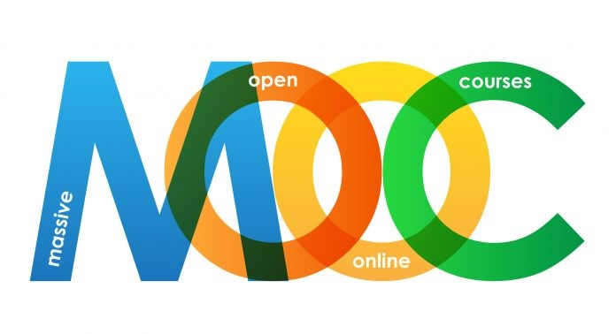

About Me
Data Architect & Strategic Analyst with 7+ years of experience in Data Automation and Pipeline Optimization for large-scale datasets. Expert in translating complex business rules into robust programmatic logic and Credit Risk Analytics to mitigate portfolio risk and optimize sales incentives.
Highly proficient in SQL, SAS, and VBScript, automating daily reporting workflows with a strong focus on building centralized Data Repositories and standardizing Master Data. Demonstrated ability to transform complex business requirements into high-impact Lead Generation and Portfolio Monitoring systems.
Education
Applied Statistics (2nd Class Honors, GPA 3.33)
King Mongkut's University of Technology North Bangkok — Faculty of Applied Science
2011 – 2015Materials Handling & Logistics (GPA 3.80)
King Mongkut's University of Technology North Bangkok — Faculty of Engineering
2016 – 2018Experience
Data Center & Data Analyst
ThaiCredit Bank Co., Ltd.
View DetailsSales Planning
Promise (Thailand) Co., Ltd.
View DetailsBusiness Development & Logistics
Mahakit Rubber Co., Ltd.
View DetailsSupply Chain Management
CJ Express Group Co., Ltd.
View DetailsResearch Assistance
KMUTNB
View DetailsSkills
Data Analysis
Programming
Visualization
Soft Skills
Certificates


1 / 0